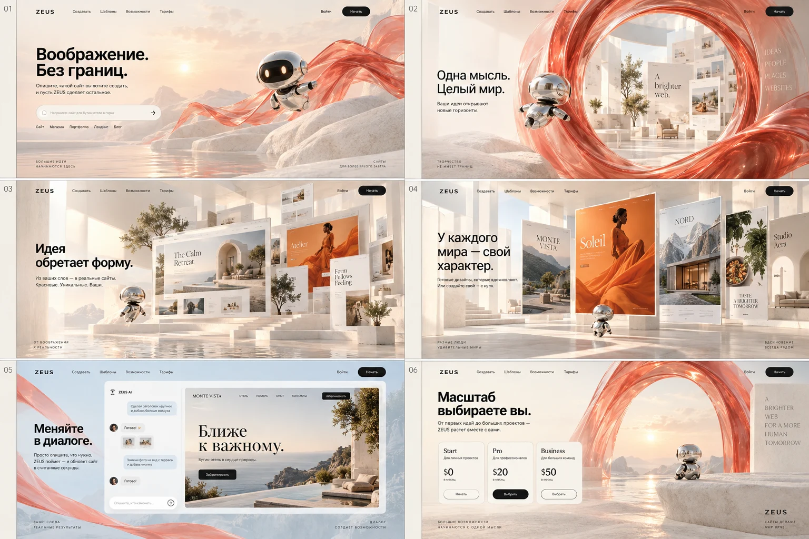

ВИЗУАЛЬНЫЙ СЦЕНАРИЙ · 28.09.2026Одна мысль.
Целый мир.
Светлый минеральный пейзаж, хромированный проводник и коралловое стекло. Шесть кадров задают пространство, свет и композицию новой версии Zeus.

Это концепт, созданный через imagegen. Надписи и цены на раскадровке иллюстративны. На самом сайте — настоящие поля и кнопки, подготовленные демошаблоны и анимация по положению прокрутки.
- Встреча. Робот приглашает начать. Идею можно сразу написать в поле.
- Приближение. Прокрутка приближает камеру к стеклянной арке.
- Раскрытие. За аркой появляется светлая галерея, затем композиции сайтов.
- Выбор. Из галереи можно взять пример и продолжить работу в студии.
- Диалог. Прохладная сцена рассказывает о правках, версиях и сохранении.
- Новая идея. Возвращение к пейзажу и приглашение создать свой проект.
Посмотреть работающую версию →